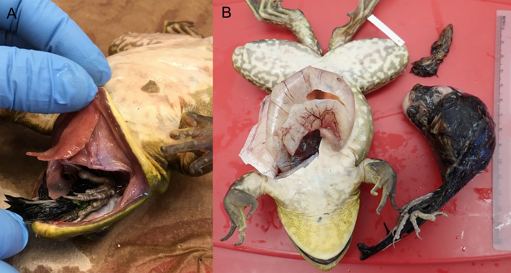
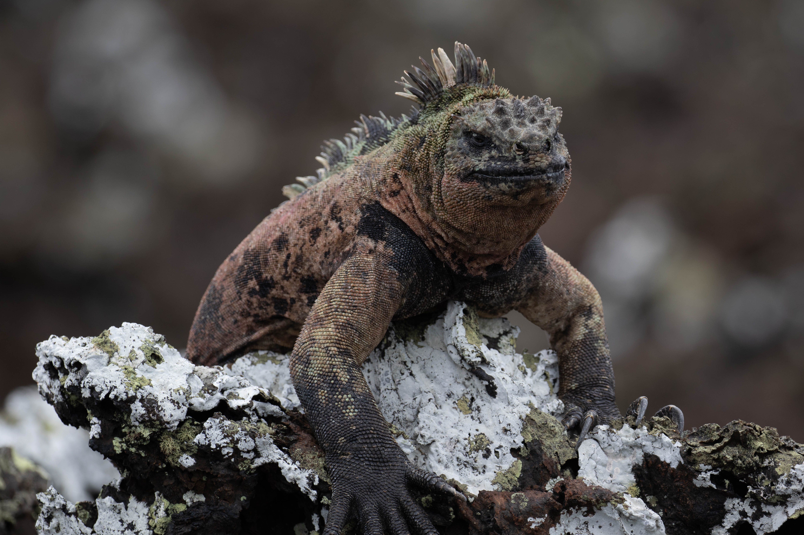
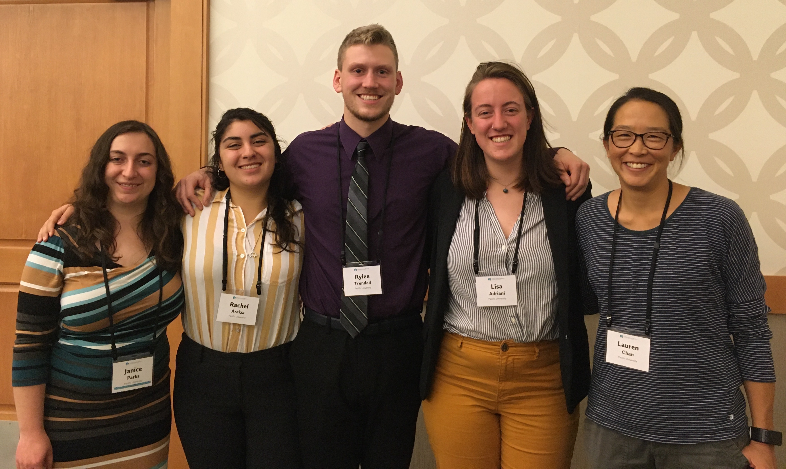
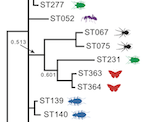
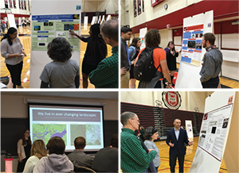
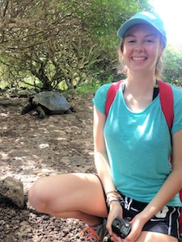

News
July 2020

Chris and Lauren publish their first paper together, along with past Pacific undergrads Wyatt Eng, Brandon Hergert, and Ali Osbrink. You can read the Herp Review Natural History note here of a live bullfrog that had eaten a spotted towhee 30% its body mass!
January 2020
Lauren and Chris made it back from 3 weeks in Ecuador and the Galapagos Islands teaching Pacific's Natural History of Ecuador and the Galapagos course to an amazing group of students, and doing research in the western Andes on Plain Tailed Wrens with recent grads Rylee Trendell and Katri Herranen.

December 2019
Rachel and Rylee are part of the "People of Pacific" video series where they talk about their summer research! Check them out!
November 2019

Janice, Rachel, Rylee, and Lisa presented their summer research projects at the annual Murdock Undergraduate Research Conference. Well done!
June 2019

A paper from a super fun collaboration with Pacific prof Joanne Odden characterizing Wolbachia strains across a survey of Western North American arthropods has been accepted for publication in Western North American Naturalist! Joanne led the study and I worked with Bioinformatics major, Wyatt Eng, to complete the phylogenetic analysis of the Wolbachia strains.
Rylee Trendell and Marissa Eckman gave a fantastic poster of their research at the International Urban Wildlife Conference. They presented their work from the spring semester looking at how landscape affects population genetic connectivity in Pacific treefrogs. Lauren also presented, giving a talk in the Urban Habitat Connectivity session on genetic connectivity in the Northern red-legged frog.
April 2019

Eight of Lauren's capstone students presented their original research at Pacific's annual Senior Projects Day! They all did a great job! Tiffani, Candice, and Marissa used genetic data to study population connectivity in Pacific Treefrogs. Leigh and Kaleb, and Marcel developed genetic markers to detect the presence of particular species (e.g. beaver, nutria, and northern red-legged frogs) from environmental DNA samples. Wyatt and Alison, Bioinformatics majors, presented their work developing tools to study protocadherin evolution across the vertebrate tree.
Nov 2018
Marissa presented her future research project at the Pacific Undergraduate Research Conference. She'll be collecting genomic data for the Oregon Slender Salamander to determine the genetic diversity and recent history of suburban populations.
Oct 2018
We received funding from Oregon Wildlife Foundation to support our research with the Oregon slender salamander. This species has a narrow range in the Cascades, but suburban populations in Gresham and Portland were discovered relatively recently. Funding from OWF will help us to determine the genetic distinctiveness, source, and connectivity of these populations so that sound conservation management decisions can be made to support this species.
May 2018
Our paper on the phylogeography of two species of Calceolaria in Patagonia was accepted to Evolutionary Ecology! This is a paper stemming from some of Lauren's postdoc work. pdf
Double congratulations to Sadie! She's graduating with a degree in Environmental Biology and will head to the University of Pittsburg after commencement to work on the effects of climate change and chytrid in frogs.

Chris Templeton and Lauren were awarded a small grant by Clean Water Services to work with invasive bullfrogs.
April 2018
Congratulations to Sadie on an excellent senior capstone presentation on Senior Projects Day.
February 2018
Sadie presented her ongoing research on red-legged frogs and rough-skinned newts at the regional joint meeting of the Oregon Wildlife Society, Washington Wildlife Society, Society for Northwestern Vertebrate Biology, and the NW Partners for Amphibian and Reptile Conservation!
November 2017
Sadie presented her's and Owen's summer research at the Murdock Conference in Spokane!
Summer 2017
Owen and Sadie join the lab! They're working on the landscape genetics of red-legged frogs and rough-skinned newts.